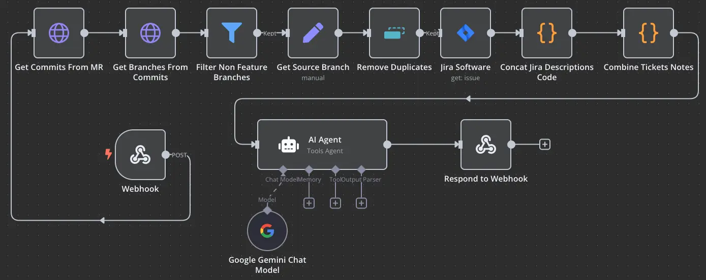

There has been so much hubbub around generative AI in the past few years, and with good reason. Plenty of software engineers and IT professionals have been leveraging Large Language Models (LLMs) to automate a wide variety of tasks. Some of these use cases are risky. Having LLMs write software for you (a process known as “vibe coding”) can introduce vulnerabilities in a code base. I’ve experienced this personally when I experimented with using LLMs to write unit tests, and it introduced created a very obvious security vulnerability in my code, and then made Git commits without my permission. I immediately did a Git hard reset and wrote the unit test myself. It likewise would be counter productive to use AI to write this blog post, since the main point to this blobs is to share my own thoughts, not mixed up word salad from across the entire web.
That being said, there are myriad ways for software engineers and other IT professionals to integrate generative AI in their daily workflow, and my colleagues at Stanford and I have found a particularly productive use case; AI generated release notes.
The idea is to make an application which will aggregate information about a new software release using Git commit messages and API calls to Jira, GitLab, and other software tools, feed that information into an LLM with a prompt to generate release notes, and then forward the release notes to relevant sources. This process is configured to run automatically any time someone makes a pull request to the UAT or main Git branches in a code repository. I’d like to share a broad overview of this project that I’ve been working on over the last few months at Stanford, and how you can use LLMs to write release notes for your software as well.
Everything starts when a pull request is made to specific branches. In our implementation, I used GitLab’s CI/CD tools, but this works with any DevOps automation tool. At Stanford, we have the practice of naming our feature branches after Jira ticket IDs, so my application makes two API calls to the Gitlab API; one to get a list of every commit that was made in the pull request in question, and then another to get the feature branches that each commit was made on. From there, we can associate a Git feature branch with a Jira ticket. I then used the Jira API to get a detailed summary for every Jira ticket associated with the new release. That is fed into an LLM, which is instructed to construct markdown release notes. This then works in conjunction with other APIs that I developed to forward the release notes. In this implementation, it sends release notes to a specific Slack channel.
Optionally, you can include Git commit messages in the LLM input as well. This gives the LLM more information that might not have been written in the Jira ticket. I chose to make this input optional, since some developers don’t write detailed commit messages, which might become unnecessary input that could confuse the model. Thus, I designed the app so that developers could choose whether or not to enable Git commit message input in their project. The Git CLI command below provides very good input for model by containing only Git commit messages that have not been merged yet.
Git log --cherry-pick --right-only --pretty=format:"%s%n %b" dev..HEADThe release note format is important for the readability of the notes. I instructed the LLM to separate the release notes into three distinct sections, each with a list of bullet points:
Integrating this application in Stanford’s CI/CD automation has freed developers of having to write descriptions for each software release, greatly reducing the amount of time and effort needed to release software updates. I love this use case for generative AI, because it automates a great deal of work for developers without the risk of breaking software or introducing vulnerabilities, and the risk of misinforming users remains low. If you have to write release notes frequently, try using this automation. I think you’ll like it.